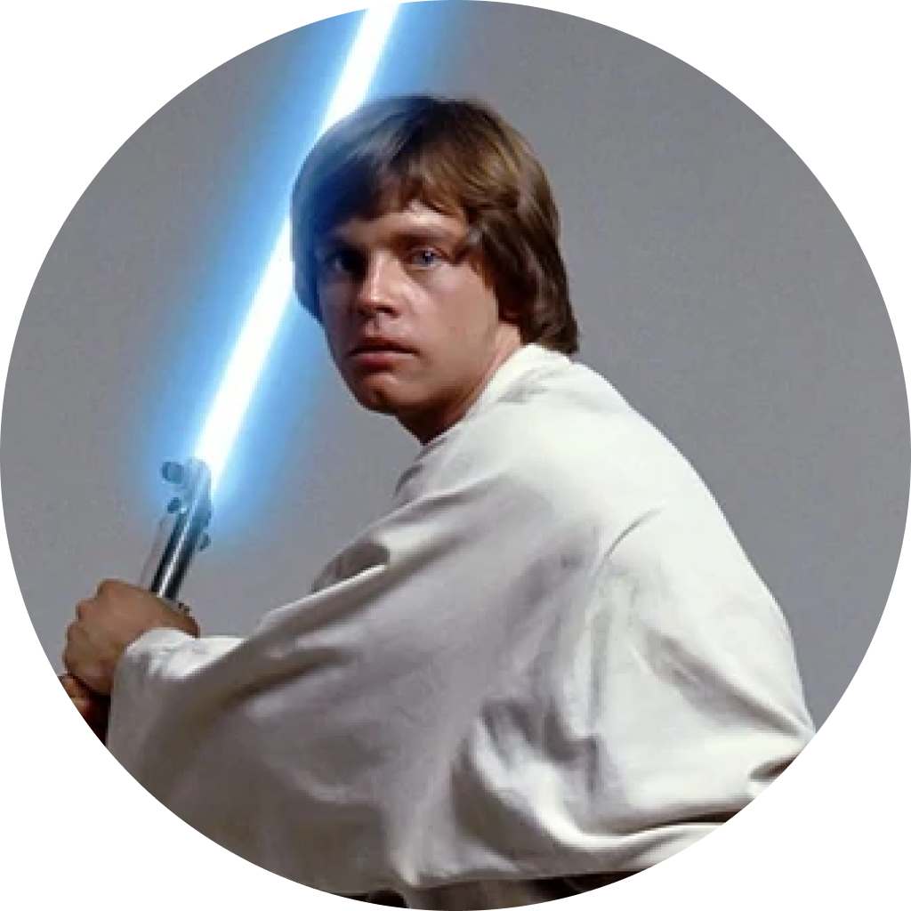
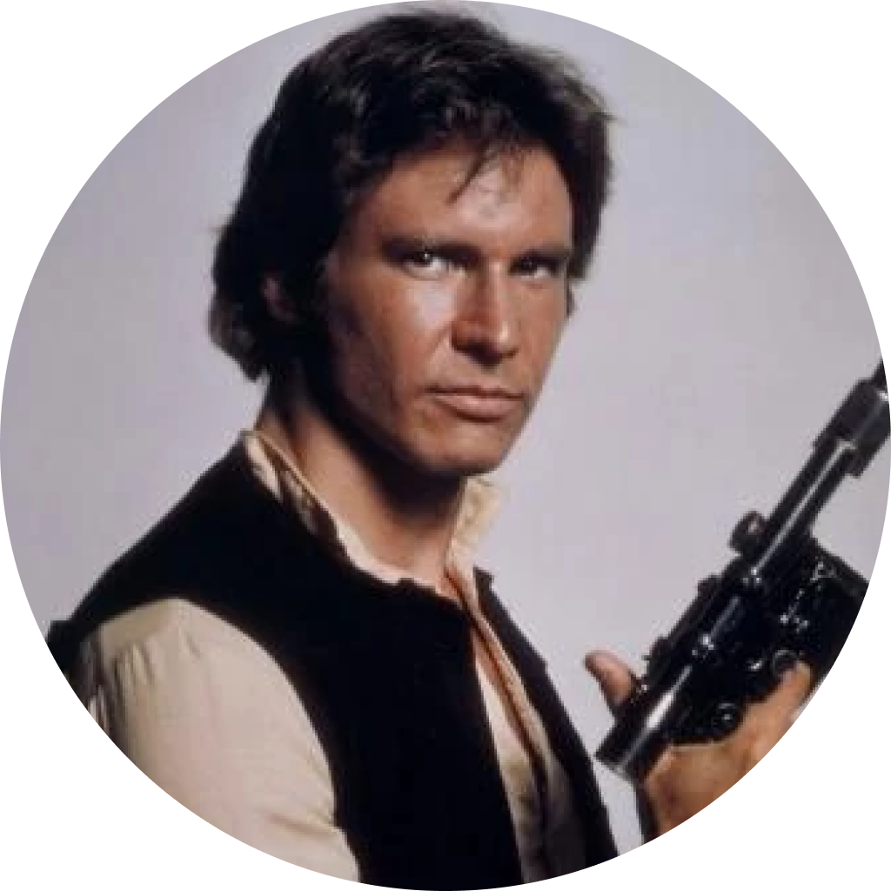
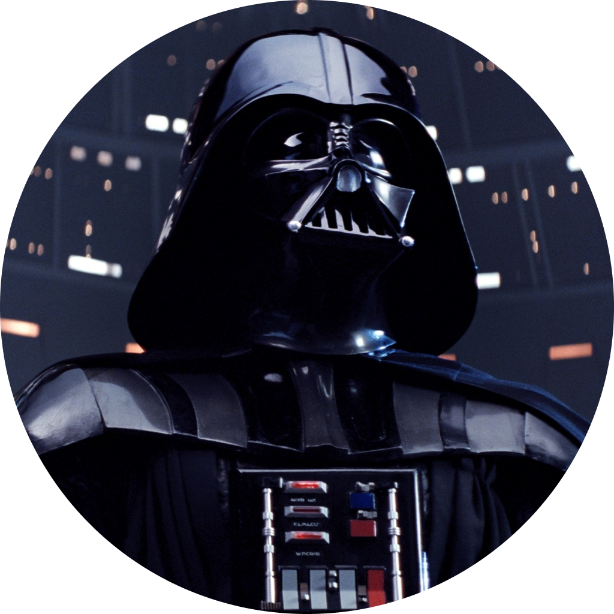

STAR WARS - TRILOGIA ORIGINAL
"Que a força esteja com você!"

A princesa Leia é mantida refém pelas forças imperiais comandadas por Darth Vader. Luke Skywalker, após ter seus tios assassinados pelo Império, e o capitão Han Solo precisam libertá-la e restaurar a liberdade e a justiça na galáxia. Após regatar a princesa da Estrela da Morte, uma estação espacial imperial, os dois se unem à Aliança Rebelde, opositores do Império de Palpatine, para combater os exércitos do lado sombrio da Força e explodem a super estação imperial em uma missão rebelde.
Após esses eventos, o Metre Jedi Yoda treina Luke Skywalker para ser um cavaleiro Jedi. Han Solo, Leia, C-3P0 e Chewbacca fogem de caças imperiais e percebem que o hiperpropulsor da Millennium Falcon está danificado; por isso, vão até a cidade das nuvens onde são encontrados por Darth Vader e o Império e Han Solo é congelado em carbonita. Luke vai até a câmara de congelamento e encontra Darth Vader onde duelam e Vader revela ser o pai de Luke. Ao se deparar com a morte, Luke pede ajuda a Leia que sente o pedido telepaticamente. Skywalker é regatado e todos fogem das frotas imperiais com esperança de resgatar Solo.
Han Solo, ainda congelado em carbonita, é entregue para o terrível Jabba o Hutt, a quem ele devia então a Princesa Leia, Luke Skywalker o resgatam. O Império Galático começou a construção de uma segunda Estrela da Morte, visando aniquilar a Aliança Rebelde, mas seu término está comprometido pela Frota Rebelde, que insiste em dar um fim ao Império. Neste meio tempo, Luke Skywalker luta para resgatar Vader, seu pai ex-Jedi, de volta do lado sombrio da força. A Aliança Rebelde cai numa armadilha feita pelo próprio imperador, pois tanto a informação do estado atual da nova Estrela da Morte como os códigos de entrada na lua que estavam estudando eram parcialmente falsos, com o objectivo de atrair a frota principal da aliança rebelde à sua destruição. Os rebeldes encontram os Ewokes na lua de Endor. Luke Skywalker, ciente do que o seu destino lhe reserva, decide entregar-se e enfrentar Darth Vader, que se havia revelado seu pai, acreditando que ainda havia bondade em Vader. Luke e Darth lutam quando Skywalker, movido por raiva, ataca o Imperador, mas num lapso de consciência Luke se recusa a matar seu pai, porém Palpatine ataca Luke e o deixa em profunda agonia. Vader, com suas últimas forças, arremessa o Imperador para a sua morte. Já sem forças, Vader se reconcilia com Luke e pede que o garoto fale que estava certo a respeito dele para sua irmã, Princesa Leia e, dando um último suspiro, morre e se transforma na Força como espírito, assim como seu antigo mestre. A nova estação explode com ataques rebeldes, marcando assim o fim das forças imperiais. Luke se reúne com o resto da Aliança na Lua de Endor, onde revela seu parentesco à Leia e juntocom os Ewokes comemoram o fim do Império Galático.
|  |
Luke SkywalkerLuke Skywalker, um homem humano sensível à Força, foi um lendário Mestre Jedi que lutou na Guerra Civil Galáctica durante o reinado do Império Galáctico. |
Princesa Leia OrganaPrincesa Leia Organa ou General Leia Organa era uma Humana sensível à Força que serviu como Princesa de Alderaan, membro do Senado Imperial, General da Aliança pela Restauração da República e da Nova República, e a general fundadora da Resistência. |
|  |
Han SoloHan Solo, piloto da Millennium Falcon era um contrabandista Humano do planeta Corellia. Seu melhor amigo e companheiro de primeira foi Chewbacca, um Wookiee. |
|  |
Darth Vader/Anakin SkywalkerDarth Vader foi um humano sensível à Força e seduzido pelo lado sombrio. Antes chamado de Anakin Skywalker, um Cavaleiro Jedi da República Galáctica e foi considerado o Escolhido da Força. |